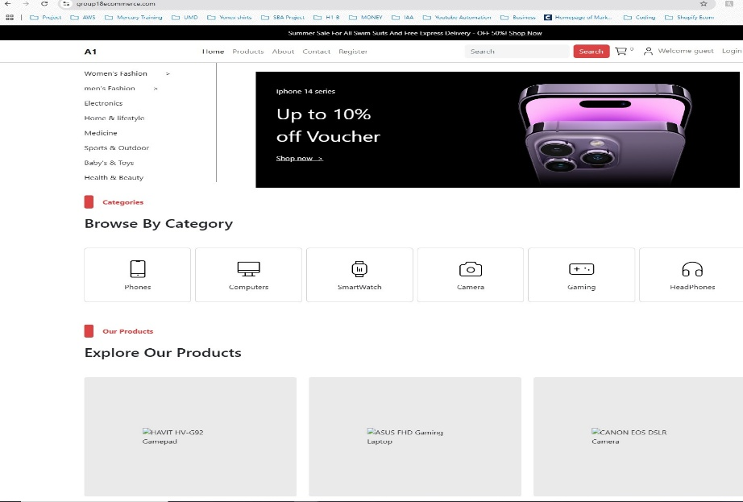
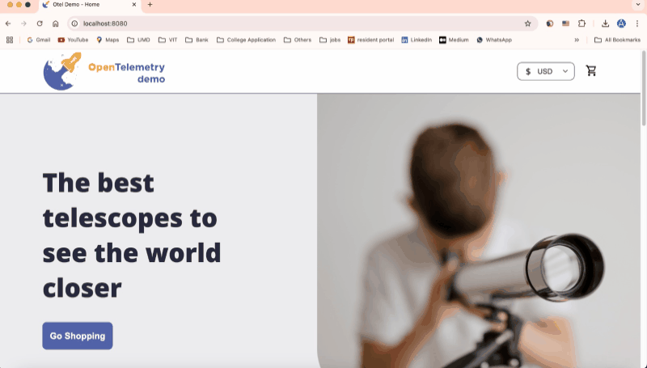
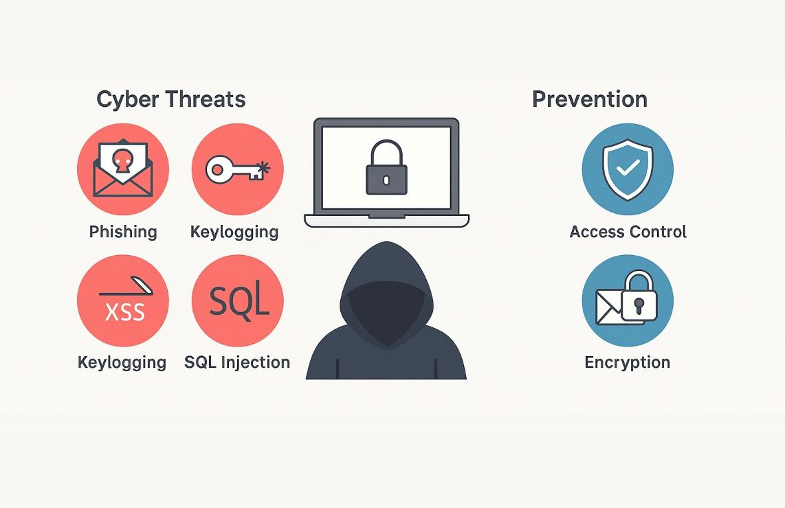
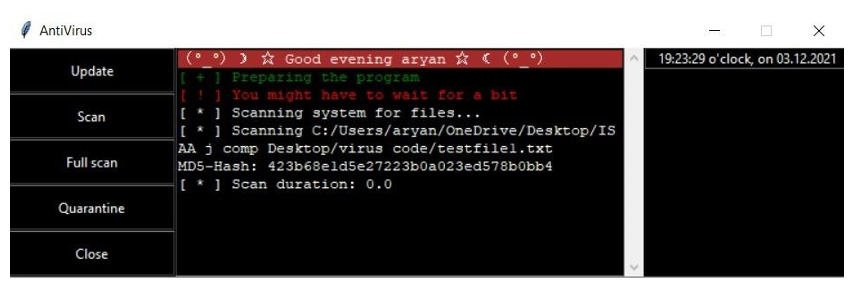
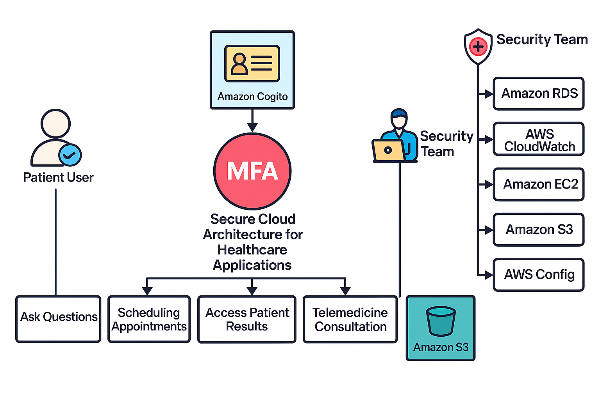
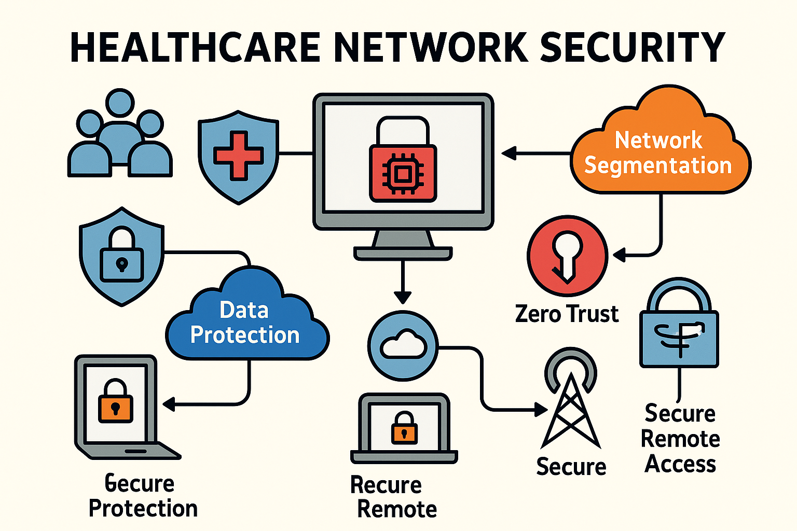
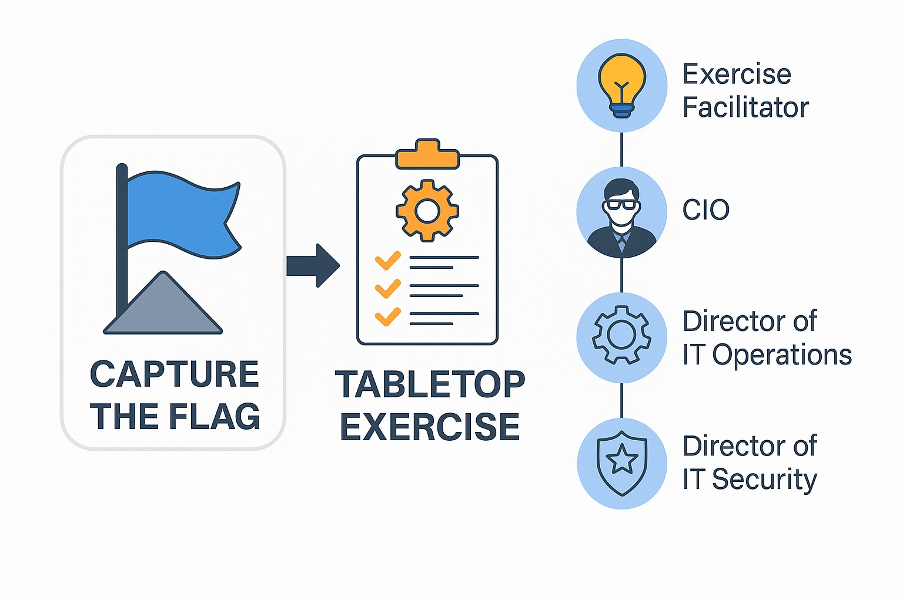

Scalable and Secure E-Commerce Platform on AWS

Deployed a scalable and secure e-commerce platform on AWS using EC2, RDS, ALB, and WAF. Focused on auto-scaling, load balancing, and security hardening, with performance testing via JMeter and real-time monitoring using CloudWatch.
Deploying OpenTelemetry Application in EKS

Deployed a cloud-native microservices demo on Amazon EKS using OpenTelemetry for full-stack observability. Integrated Prometheus, Grafana, and Jaeger for monitoring and tracing, with automated CI/CD using GitHub Actions. Emphasized modularity, automation, and scalable infrastructure.
Cyber Threats and Prevention in Web Application

Explored web application vulnerabilities like phishing, XSS, SQL injection, and broken access control by developing test exploits in a secure environment. Implemented a custom keylogger that captures user data and demonstrated encryption, persistence, and phishing workflows for educational awareness.
Antivirus and Virus Malware Detection Using Python

Developed a self-replicating virus simulator and an antivirus tool with signature-based and heuristic scanning. Included a quarantine system and user-friendly GUI for threat detection, built entirely in Python.
Securing Cloud Based Healthcare Application

Designed and implemented a secure cloud architecture for a healthcare application using AWS. Focused on IAM, VPC isolation, WAF, S3/RDS encryption, and compliance tools like GuardDuty and CloudTrail to ensure availability, data protection, and HIPAA/NIST readiness.
Enhancing Healthcare Network Security

Developed a comprehensive multi-layered security plan for hospital networks by applying Zero Trust principles, threat modeling, and network segmentation. Emphasized data protection, secure remote access, and system resilience to mitigate modern healthcare cybersecurity threats.
Security-Tools-for-Information-Security

Conducted offensive and defensive cybersecurity exercises as part of a graduate-level project. The midterm focused on penetration testing via a simulated CTF challenge, while the final involved leading a Tabletop Exercise scenario to respond to multi-stage cyberattacks. Tools like Nmap, Hydra, and Metasploit were utilized.